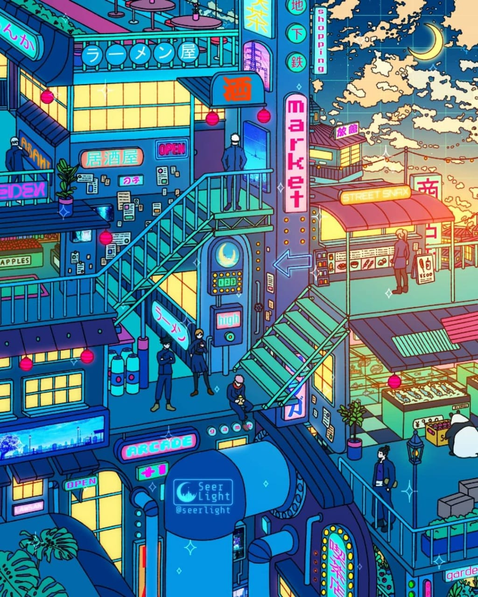

Home / news
Boku no Hero Academia (bahasa Jepang: 僕のヒーローアカデミア Hepburn: Boku no Hīrō Akademia), yang diterbitkan di Indonesia dengan judul My Hero Academia, adalah sebuah seri manga shōnen Jepang bertema pahlawan super yang ditulis dan diilustrasikan oleh Kōhei Horikoshi. Manga ini mulai dimuat dalam majalah Weekly Shōnen Jump sejak bulan Juli 2014, dan telah dibundel menjadi 30 volume tankōbon hingga bulan April 2021. Ceritanya mengisahkan tentang Izuku Midoriya, seorang anak lelaki tanpa kekuatan super (yang disebut quirk) di dunia tempat hal seperti itu sudah menjadi sesuatu yang umum, tetapi masih bercita-cita untuk menjadi seorang pahlawan. Ia kemudian bertemu dengan pahlawan terhebat di Jepang, yang membagi quirk miliknya kepada Izuku setelah melihat potensinya, dan kemudian memasukkannya dalam sebuah SMA prestisius yang dikhususkan untuk para pahlawan muda yang sedang dalam pelatihan
Boku no Hero Academia (bahasa Jepang: 僕のヒーローアカデミア Hepburn: Boku no Hīrō Akademia), yang diterbitkan di Indonesia dengan judul My Hero Academia, adalah sebuah seri manga shōnen Jepang bertema pahlawan super yang ditulis dan diilustrasikan oleh Kōhei Horikoshi. Manga ini mulai dimuat dalam majalah Weekly Shōnen Jump sejak bulan Juli 2014, dan telah dibundel menjadi 30 volume tankōbon hingga bulan April 2021. Ceritanya mengisahkan tentang Izuku Midoriya, seorang anak lelaki tanpa kekuatan super (yang disebut quirk) di dunia tempat hal seperti itu sudah menjadi sesuatu yang umum, tetapi masih bercita-cita untuk menjadi seorang pahlawan. Ia kemudian bertemu dengan pahlawan terhebat di Jepang, yang membagi quirk miliknya kepada Izuku setelah melihat potensinya, dan kemudian memasukkannya dalam sebuah SMA prestisius yang dikhususkan untuk para pahlawan muda yang sedang dalam pelatihan